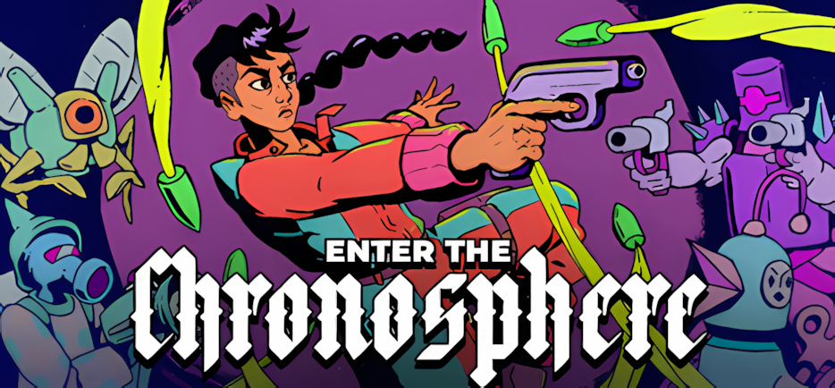

Enter the Chronosphere - QA Mini-Pass (PC)
🧾 Test Overview
- Platform: PC (Windows 11)
- Focus Areas: World selection clarity, replayability, combat feedback, friendly fire communication, projectile behaviour, and enemy AI consistency
- Purpose: Check whether current run-start and combat systems behave consistently and communicate clearly to the player
Introduction
This is a focused QA pass on Enter the Chronosphere, tested on PC using Demo v136.3.
The goal was to check how stable current gameplay systems are, with a focus on world selection behaviour, combat feedback, and whether player-facing interactions are clearly communicated during play.
Testing focused on:
- World selection clarity and replayability
- Combat feedback and damage attribution
- Enemy friendly fire communication
- Projectile behaviour under normal combat conditions
- Enemy AI consistency during combat
Findings are based on direct testing and are supported with reproducible behaviour and evidence.
| Game | Platform | Scope |
|---|---|---|
| Enter the Chronosphere | PC, Demo v136.3 | QA mini-pass focused on world selection clarity, combat feedback, enemy damage attribution, projectile behaviour, and enemy AI consistency. |
🎯 Goal
Check whether key run-start and combat systems behave consistently and remain understandable during normal gameplay.
🧭 Focus Areas
- World selection and replayability
- Run-to-run variation
- Combat feedback and damage attribution
- Projectile movement and updates
- Enemy AI behaviour during combat
📄 Deliverables
- QA workbook with README, charters, session notes, bug log, risk matrix, and player experience notes
- One-line findings summary for quick review
- Bug log with expected vs actual behaviour and evidence link
- Short video evidence for the projectile freeze issue
📊 Metrics
| Metric | Value |
|---|---|
| Total Sessions Logged | 3 |
| Total Bugs Logged | 1 |
| Critical | 0 |
| High | 1 |
| Medium | 0 |
| Low | 0 |
| Player Experience Findings | 2 |
| Primary Risk Area | Projectile behaviour and combat reliability |
| Repro Rate | Projectile freeze observed 1/1 in the affected room state; supporting clarity findings observed across repeated runs |
📷 Evidence
Supporting evidence is included to show the highest-impact issue clearly and make the report easier to review.
- Short gameplay clip showing enemy projectiles freezing until player movement
- Structured workbook covering charters, session logs, bug log, risk matrix, and player experience notes
- Focused observations from repeated runs across world selection and combat systems
| Type | File / Link |
|---|---|
| QA Workbook (Google Sheets) | Open Workbook |
| QA Workbook (PDF Export) | Open PDF |
📌 Core Project Findings
| Area | Finding | Evidence |
|---|---|---|
| World Selection / Run Start | World selection rotates from a larger pool with no explanation, preventing intentional replay and mastery. | S001 - 5 runs |
| Combat Feedback / Damage Attribution | Enemy friendly fire exists but is not communicated, making combat outcomes unclear. | S002 - 3 runs |
| Combat / Projectile System | Enemy projectiles freeze unless the player moves, breaking core combat behaviour. | See Bugs Logged |
🐞 Bugs Logged
| ID | Title | Severity | Repro | Evidence Clip/Screenshot |
|---|---|---|---|---|
| CHRONO-1 | Enemy projectiles freeze and only update on player movement | High | 1/1, state-based | Watch Clip - Projectile Freeze |
Full bug log with repro steps, expected vs actual, and evidence: Download Bug Log (PDF)
The strongest functional issue was CHRONO-1, where enemy projectiles froze mid-air when the player was stationary and only advanced when the player moved. During the same state, a named NPC also showed inconsistent behaviour and firing actions with no visible projectiles.
🧠 Player Experience Notes
| Moment | Player Expectation | Actual Experience | Friction Type | Impact | Severity |
|---|---|---|---|---|---|
| Selecting a world at the start of a run | Be able to retry the same world to improve performance, learn layouts, or achieve better results. | Only 3 worlds are shown per run, appearing to rotate from a larger pool. Previously played worlds do not reliably reappear, and layouts change each time with no explanation. | Clarity / Control | Player cannot intentionally retry or improve on a known world or layout, reducing sense of mastery and progression. | Medium |
| Enemies fighting in close proximity | Damage sources and combat outcomes are clearly communicated. | Enemies damage and kill each other via projectiles with no clear visual or UI feedback indicating friendly fire or source of damage. | Clarity | Player may not understand why enemies die or that friendly fire is possible, reducing strategic awareness and causing confusion. | Medium |
| During combat when enemies are attacking | Enemy projectiles behave consistently and combat flows in real time. | Enemy projectiles freeze mid-air when the player is stationary and only update when the player moves. Enemy behaviour becomes inconsistent during this state. | Functional / Responsiveness | Combat becomes unreliable and difficult to react to, breaking timing, positioning, and player decision-making. | High |
📈 Results
- Completed 3 focused QA sessions on Enter the Chronosphere.
- Logged 1 high-severity bug affecting projectile movement and combat reliability.
- Recorded 2 additional player experience findings covering world selection clarity and combat damage attribution.
- Identified that enemy friendly fire exists but is not clearly communicated to the player.
- Identified that world selection and room variation may reduce intentional replay without added explanation or player control.
- Checked recent Discord bug reports and found no matching report for the projectile freeze issue.
🔍 Key Points for the Developer
- Projectile movement is the highest-risk issue found. Enemy projectiles froze until the player moved, directly affecting combat timing and reliability.
- Enemy AI behaviour also became difficult to interpret during the projectile freeze state. A named NPC showed inconsistent movement, targeting, and projectile output while the issue was active.
- Friendly fire appears to exist but is not clearly communicated. Enemies can damage and kill each other, but players may not understand the source of damage or the strategic possibility.
- World selection behaviour may be working as designed, but the logic is not clear to the player. The current structure limits control over replaying a specific world or layout, which may affect mastery and score improvement expectations.
- The projectile freeze issue does not appear to be a duplicate of recent Discord bug reports. Recent reports included crashes, exit spawning, UI wording, language update issues, and mechanic clarity, but not projectiles freezing or movement-tied updates.
🔚 QA Summary & Next Steps
The highest-risk issue found in this mini-pass is the projectile freeze bug. Enemy projectiles stopped moving when the player was stationary and only advanced when the player moved, which breaks the expected timing and readability of combat.
The same state also affected enemy behaviour, with a named NPC showing inconsistent movement, targeting, and firing output. This suggests the issue may involve a deeper dependency between projectile updates, player movement, and enemy AI behaviour.
The additional findings are not framed as defects. They highlight player-facing clarity risks around world selection, replay control, and friendly fire communication.
Recommended next steps:
- Investigate whether projectile updates are tied to player movement, camera movement, or room update state.
- Re-test the affected world and room state after any projectile or enemy AI fixes.
- Clarify enemy friendly fire through visual feedback, tooltip text, tutorial messaging, or consistent damage indicators.
- Consider whether world selection rotation needs explanation, retry options, or clearer progression framing.
Need Someone to Test Your Game?
If you have a demo, early build, or update that needs testing, message me on Discord or email with your platform, build, and what you’d like checked.
📎 Disclaimer
This is a personal, non-commercial portfolio for educational and recruitment purposes. I’m not affiliated with or endorsed by any game studios or publishers. All trademarks, logos, and game assets are the property of their respective owners. Any screenshots or short clips are included solely to document testing outcomes. If anything here needs to be removed or credited differently, please contact me and I’ll update it promptly.